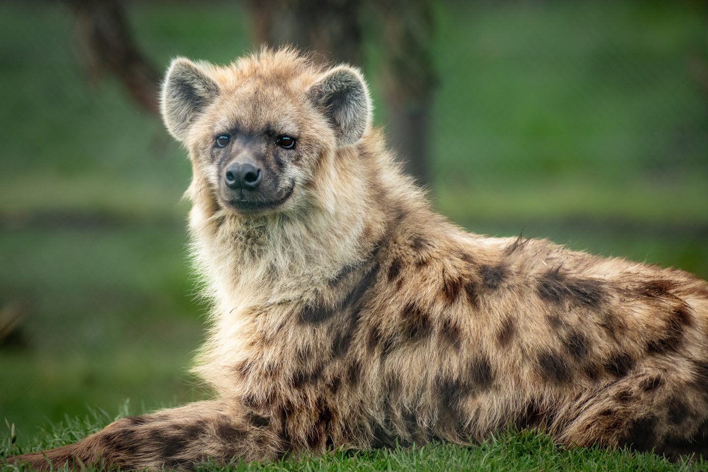

|
|
There are two species of hyenas in Kenya-the stripped hyena and the spotted hyena. They can be found throughout Africa ,in all habitats except rainforests. The spotted hyena(also called the laughing hyena)is the largest hyena species ,with the females being larger than males. Their coats are patterned with darkspots.These animals hunt fish,birds,and even hippo calves, and work in packs to take down wildebeests or antelopes. Stripped hyenas are lesser known than their spotted cousins.They are more scavengers than hunters and typicaly come out at night to feed on carcasses left by other animals. The spotted hyena is listed by the IUCN as least concern,and the stripped hyena is near threatened .Human wildlife conflict is the main threat in their survival . |